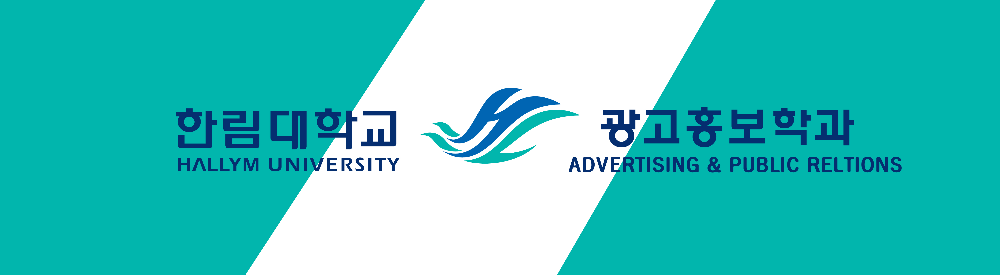

광고홍보학은 광고활동과 광고현상 등을 연구대상으로 하는 ‘광고’와 기업 단체
또는 관공서 등의 조직체가 커뮤니케이션 활동을 통하여 스스로 생각이나 계획 활동
업적 등을 널리 알리는 ‘홍보’로 구분됩니다.
광고 산업은 오늘날 정치, 경제, 사회, 문화 등 모든 분야에서 중요한 역할을 담당하게
되었습니다. 광고홍보학과에서는 현대 사회에서 광고의 역할과 광고에 나타나는 커뮤니케이션
현상을 과학적으로 탐구함으로써 광고계의 능력 있는 인재를 양성하는데 교육목표를 두고 있습니다.